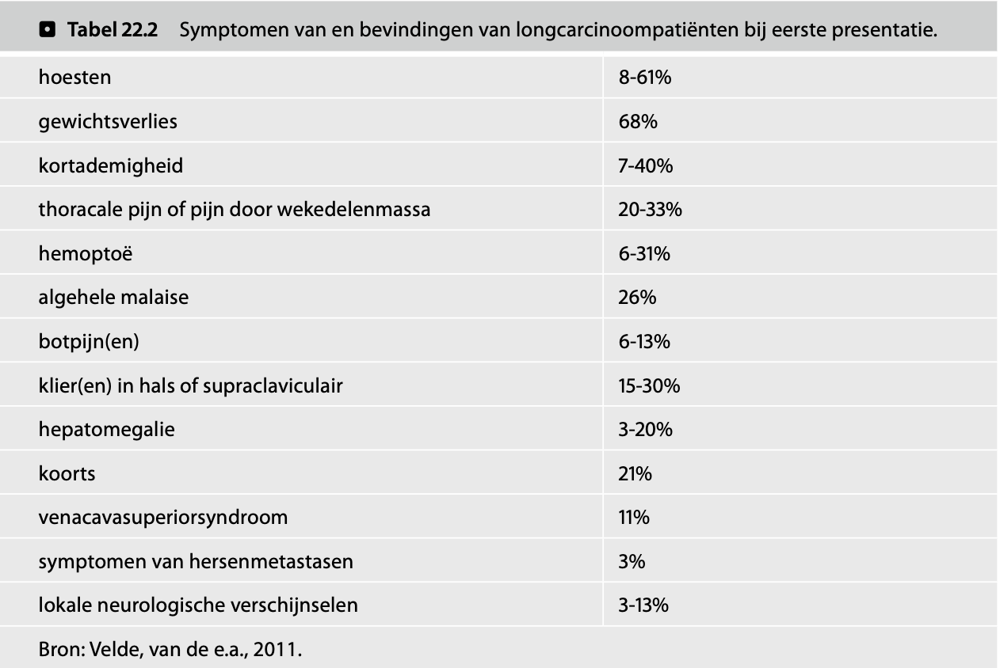
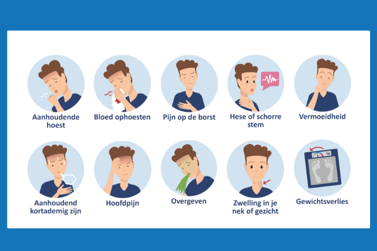

Wat is longkanker?
Longkanker is een kankersoort die ontstaat in de longen. Het is een veel voorkomende soort kanker. Jaarlijks krijgen ongeveer 14.500 mensen de diagnose longkanker. Tachtig procent van deze mensen is ouder dan 45 jaar. Bij ongeveer de helft is de kanker al uitgezaaid als de arts de ziekte ontdekt. Het kan in 1 long zitten of in allebei de longen. De belangrijkste soorten longkanker zijn: niet-kleincellige longkanker en kleincellige longkanker. Het medische woord is longcarcinoom. (1,2)
Symptomen (6)
Tot de algemene lichamelijke symptomen behoren onder andere vermoeidheid, algehele malaise en vermagering. Gewichtsverlies is een aspecifiek symptoom van het longcarcinoom, maar is een belangrijke negatieve prognostische factor.
Bij een centraal gelegen longtumor, uitgaande van de grotere luchtwegen, kan prikkelhoest, hemoptoë, pijn in de thorax of benauwdheid als vroege klacht optreden. Een perifeer gelegen longtumor geeft meestal pas laat klachten. Regelmatig geven bijkomende uitzaaiingen eerder klachten dan de longtumor zelf.
Lokale klachten ontstaan meestal bij een centrale tumor, zoals een afwijkend hoestpatroon, benauwdheid, bloed in het sputum, recidiverende ontstekingen, of pijn als gevolg van doorgroei.
Bij lokale doorgroei of mediastinale lymfekliermetastasen kan heesheid ontstaan of gelaatszwelling. Dit laatste is een alarmsignaal van een venacavasuperiorsyndroom. Ingroei of compressie kan ook pijn, passageklachten of de hik geven.
Tot de paraneoplastische syndromen behoren lichamelijke, neurologische en neuropsychologische veranderingen doordat de tumor hormoonachtige stoffen produceert of doordat een auto-immuunreactie ontstaat op antigenen van de tumor. Het hebben van paraneoplastische klachten bij het longcarcinoom wijst niet per definitie op een gemetastaseerde ziekte. Bij behandeling van de kanker kan dit leiden tot afname van dergelijke syndromen.
De meest voorkomende zijn:
- Hyponatriëmie, bij het SIADH (syndrome of inappropriate antidiuretic hormone). De tumor produceert het lichaamseigen antidiuretisch hormoon (ADH) of vasopressine waardoor vocht (water) in het lichaam wordt vastgehouden en een laag natrium in het bloed ontstaat, waardoor intense moeheid tot zelfs coma kan ontstaan.
- Hypercalciëmie, veroorzaakt door verhoogde parathormoonactiviteit of bij botmetastasen. Ook dit kan een belangrijke oorzaak zijn van sufheid of verwardheid.
- Bij de ziekte van Marie-Bamberger is er een pijnlijke ontsteking van het botvlies van de pijpbeenderen, maar ook de gewrichten kunnen meedoen. Dit leidt tot horlogeglasnagels en trommelstokvingers.


Structuur en functie van de longen
De longen zijn gepaarde, elastische organen in de thorax die betrokken zijn bij de gaswisseling. Anatomisch zijn ze verdeeld in lobben: de rechterlong bestaat uit drie lobben (superior, medius en inferior), terwijl de linkerlong twee lobben heeft (superior en inferior) vanwege de aanwezigheid van het hart (incisura cardiaca).
De luchtweg begint bij neus- en mondholte en verloopt via de trachea naar de hoofdbronchiën. De trachea splitst zich in een rechter en linker hoofdbronchus, die zich verder vertakken in lobaire en segmentale bronchiën. Deze vertakken zich in steeds kleinere bronchiolen, die eindigen in de terminale en respiratoire bronchiolen. Distaler bevinden zich de alveolaire ducti en alveoli, waar de daadwerkelijke gaswisseling plaatsvindt.
De alveoli zijn microscopische structuren met een capillair netwerk. Hier vindt diffusie plaats: zuurstof (O₂) diffundeert vanuit de ingeademde lucht naar het bloed, terwijl koolstofdioxide (CO₂) vanuit het bloed naar de alveoli diffundeert om uitgeademd te worden. Dit proces is afhankelijk van partiële drukverschillen en het diffusieoppervlak.
De longen worden omgeven door de pleura, bestaande uit een viscerale en pariëtale laag, met daartussen de pleuraholte. Deze bevat een kleine hoeveelheid vloeistof die zorgt voor minimale wrijving en een negatieve druk, essentieel voor het ontplooien van de longen tijdens inspiratie.
Ventilatie wordt mogelijk gemaakt door ademhalingsspieren, met name het diafragma. Bij contractie van het diafragma (inspiratie) beweegt deze caudaalwaarts, waardoor het thoraxvolume toeneemt en de intrapulmonale druk daalt, wat luchtinstroom veroorzaakt. Bij relaxatie (expiratie) beweegt het diafragma craniaalwaarts en wordt lucht passief uitgeademd. Bij geforceerde ademhaling spelen ook intercostale en hulpademhalingsspieren een rol. (4)